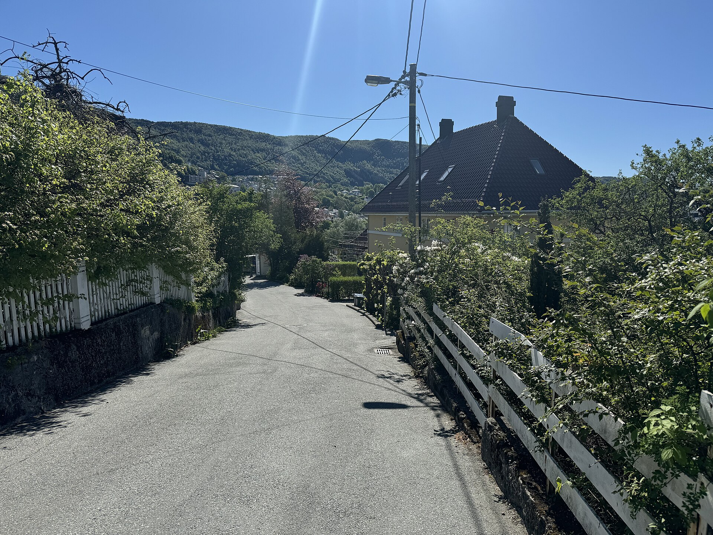
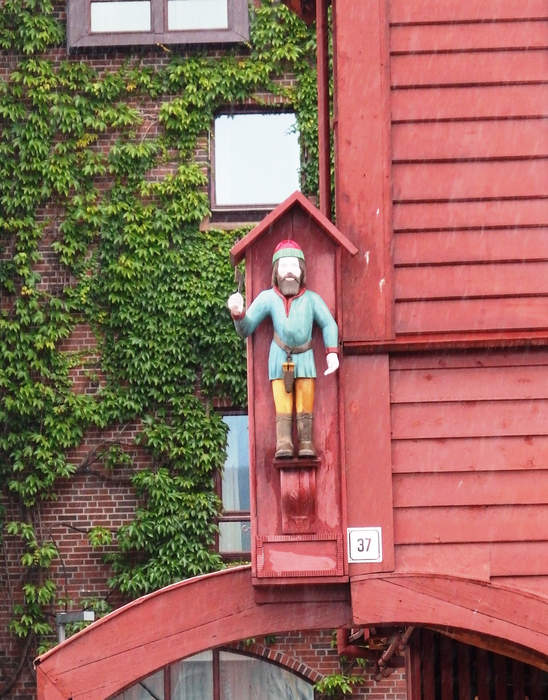
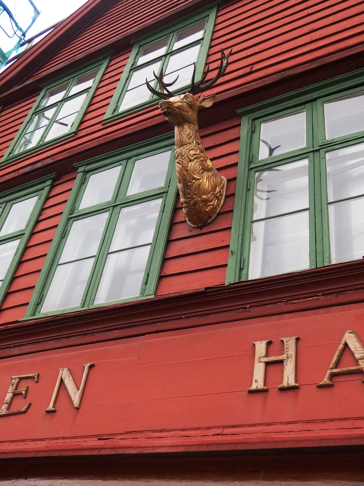
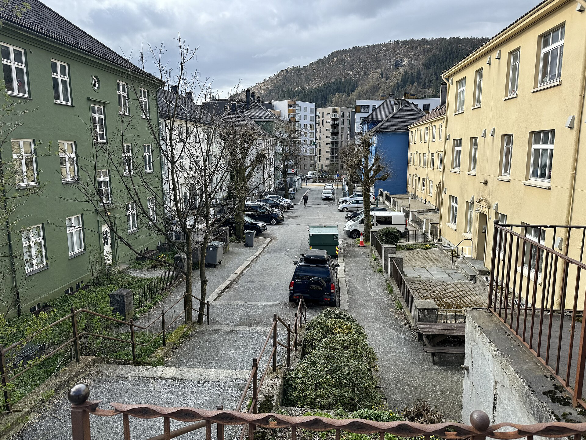

Skjegg i Sandviken
Rolig skjeggpleie i et gammelt, hvitt trehus.
Det hvite huset
I et gammelt, hvitt trehus i Sandviken tar vi én kunde om gangen. Her er det damp, olje og tid nok til å forme skjegget ordentlig, og til å ta en prat før vi begynner.

Sandviken er trehus, hvite gjerder og kort vei til vannet. Du finner oss i Sandviksveien 58, rett ved Sandviksbukten. Vi har kaffe, og du kan bare stikke innom for en prat.
- Høyde
- 24 moh.
- Fra Torget
- 2,4 km
- Sesong
- Hele året
- Lokal tid
- Europa/Oslo
Slik foregår en time
-
Inn døra
Du kommer rett inn fra gata, henger fra deg jakka og tar en prat med oss før vi begynner.

-
I stolen
Stolen er lav og gammel. Du lener deg tilbake, og vi former skjegget med kam og saks.

-
Dampen
Ti minutter med varm damp. Skjegget blir mykt, og huden får tid til å slappe av.
-
Oljen
Et par dråper skjeggolje, godt fordelt. Vi jobber sakte og lar skjegget styre retningen.

-
Høvelen
Høvelen går der kantene skal være rette. Varmt håndkle til slutt, så huden roer seg.

-
Ut igjen
Du går ut i Sandviken med tørt skjegg og en rett linje. Vi sees om fire uker.